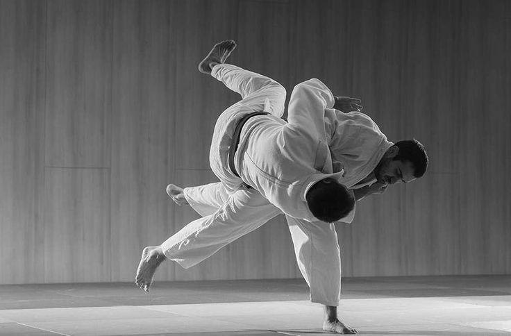
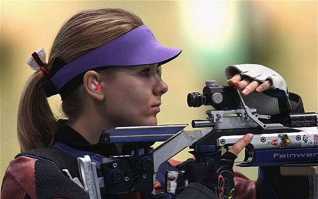
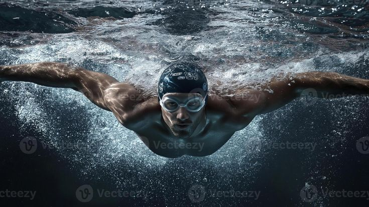

Pour la troisième fois de son histoire, Paris accueille les Jeux Olympiques, 100 ans après l'édition mythique de 1924.
Paris accueille les Jeux pour la troisième fois, après 1900 et 1924. Un siècle s'est écoulé depuis la dernière édition parisienne, celle de l'ère de Paavo Nurmi et des Chariots de Feu. En 2024, la capitale française renoue avec cette tradition en offrant au monde des Jeux ancrés dans ses monuments les plus emblématiques.
Le Trocadéro, le Champ-de-Mars, le Grand Palais, Versailles — Paris a transformé son patrimoine en arènes olympiques uniques. L'Arena de la Défense a vibré pour Léon Marchand, le Stade de France a grondé pour l'athlétisme, et les Invalides ont accueilli le tir à l'arc sous les ors de la République.
Paris 2024 marque une première historique : parité parfaite entre athlètes masculins et féminins, avec exactement 5 250 femmes et 5 250 hommes en compétition. Les Jeux ont également introduit le breaking, le surf et l'escalade sportive, témoignant d'une ouverture vers les nouvelles générations.
Le comité s'est engagé à réduire de 50 % l'empreinte carbone par rapport aux éditions précédentes. La Seine, dépollée pour l'occasion, a accueilli les épreuves de triathlon et de natation en eaux libres pour la première fois depuis des décennies.
« L'essentiel aux Jeux Olympiques n'est pas de gagner mais de participer, car l'important dans la vie n'est point le triomphe, mais le combat. »
— Pierre de Coubertin, fondateur des JO modernes
24 Juillet - 11 Août 2024
Baptisée « La Seine olympique », elle a eu lieu la soirée du 26 juillet 2024 sur la Seine à Paris, avec les cérémonies protocolaires au pied de la Tour Eiffel et dans les jardins du Trocadéro.
Cette cérémonie s’est démarquée par rapport aux précédentes par sa tenue hors d’un stade (une première) le long des quais de la Seine, tout en présentant 12 tableaux thématiques mettant en valeur le savoir-faire et la richesse culturelle française, en plus de certains morceaux de son histoire.
En plus de tout cela, les spectateurs ont aussi pu profiter d’un show de la chanteuse Aya Nakamura qui a embrasé le net avec un spectacle plein de symboles, accompagnée par la Garde Républicaine, interprétant ses tubes ainsi que des classiques de Charles Aznavour.
Histoire, règles fondamentales et athlètes légendaires qui ont marqué l'édition de Paris 2024

Créé au Japon par Jigoro Kano en 1882, le judo ("voie de la souplesse") utilise la force de l'adversaire à travers des projections et des contrôles au sol.
Les combats se sont déroulés dans le cadre somptueux de l'Arena Champ-de-Mars, se concluant par des épreuves mixtes historiques.

Présent dès les premiers Jeux modernes, le tir sportif exige de contrôler son rythme cardiaque pour loger des projectiles dans des cibles micrométriques.
Délocalisées au Centre National de Tir de Châteauroux, les épreuves de l'édition 2024 ont atteint des sommets de précision absolue.

Discipline reine regroupant quatre styles majeurs : le papillon, le dos, la brasse et le crawl. La moindre erreur de coulée y est fatale.
En 2024, le bassin olympique temporaire installé dans cette salle de spectacle a été transcendé par un chaudron de 15 000 spectateurs en folie.
Pays et athlètes qui ont marqué les Jeux Olympiques de Paris 2024
Classement par nombre d'or — Paris 2024
Les performances individuelles les plus marquantes
Sources : Comité International Olympique (CIO) · Paris 2024 · données officielles finales